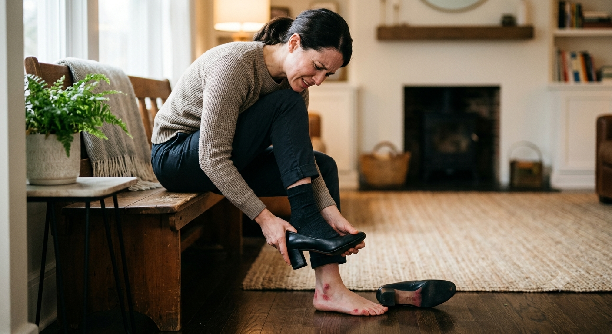

Foot care tips
The importance of properly fitted shoes

A surprising number of the foot problems seen in clinic can be traced back to the same thing: shoes that don't fit properly. The good news is that it's one of the easiest problems to put right.
What badly fitting shoes actually do
Feet are remarkably tolerant, which is part of the problem - a shoe that's slightly too tight rarely hurts straight away. It does its damage slowly, through repeated pressure and friction in the same spots, day after day.
Over time that pressure is what builds corns and calluses: the skin thickens to protect itself, and eventually the thickened patch becomes uncomfortable in its own right. Tight shoes are also one of the most common contributors to ingrown toenails, squeezing the nail into the surrounding skin. Add rubbing at the heel or across the toes and you have blisters, sore spots and nails that take a battering.
The mistakes people make
The most common is assuming shoe size is fixed for life. It isn't - feet change over the years, and can spread or lengthen with age, weight change or pregnancy. Plenty of people are wearing the size they wore twenty years ago without ever rechecking.
The second is buying on size alone and ignoring width. Two feet the same length can need very different widths, and a shoe that's the right length but too narrow will still cause trouble across the toes.
The third is hoping shoes will "give". Leather does soften a little, but a shoe that pinches in the shop is a shoe that will cause problems later.
The short version
Get both feet measured, buy for the larger one, shop later in the day when feet are at their largest, and leave roughly a thumb's width between your longest toe and the end of the shoe. If it isn't comfortable in the shop, it won't be comfortable on a long walk.
How to get the fit right
Have both feet measured rather than assuming - most people have one foot slightly larger, and shoes should be bought to fit the bigger one. Try shoes on later in the day, because feet swell as the day goes on, and a pair that fits at nine in the morning can feel very different by evening.
Check there's a little room beyond your longest toe, and that your toes can move rather than being held flat and still. Make sure the widest part of your foot sits at the widest part of the shoe. Wear the socks you'd normally wear with them, and walk around properly before deciding.
It's also worth thinking about what the shoes are actually for. A shoe that's fine for a short trip out isn't necessarily the one to wear for a day on your feet, and the more time you spend in a pair, the more the fit matters.
When to ask for advice
If you're getting recurring corns, calluses or nail problems in the same place, that pattern is usually telling you something about pressure - and footwear is often part of the answer. A podiatrist can look at where the pressure is falling, treat what's built up, and advise on what to look for in your next pair.
If you have diabetes or reduced sensation in your feet, footwear matters even more, because rubbing and pressure can do damage before you feel it. Regular checks and well-fitting shoes are an important part of looking after your feet.
This article is general foot health information and is not a substitute for individual advice.